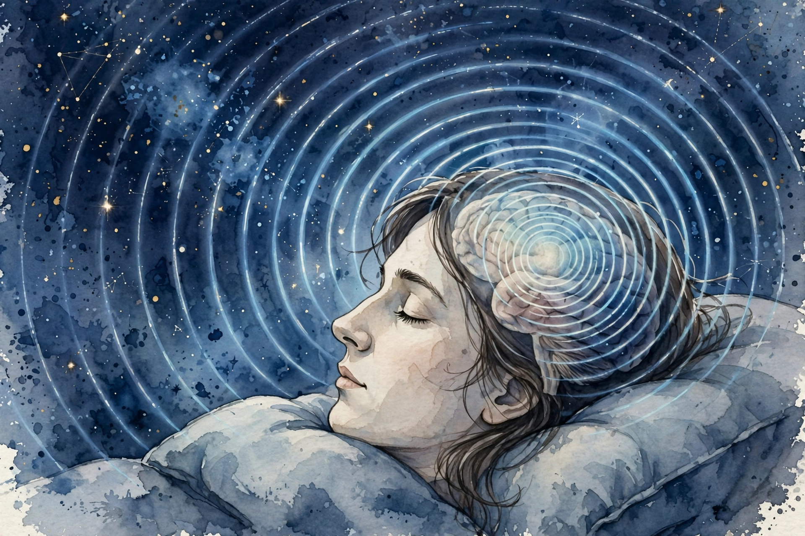

Huberman Lab · Episode 3 · Companion
Learning, Sleep and AI
Terry Sejnowski co-invented the Boltzmann machine with Geoffrey Hinton in the 1980s. Here he explains how sleep spindles write your day into long-term memory, why doubling them doubles recall, and how transformers do self-attention, with a bet that your basal ganglia does the same. This companion follows the conversation in order.

Illustration. The spindle: a one to two second circular wave that kneads the day into the cortex. Made for this page. AI-generated watercolor in a New Yorker style, made for this page. It carries no words or labels.
Watch. The official episode video on youtube-nocookie, the only external dependency on this page. Use the chapter menu above to jump to any section of this companion as you listen.
The Wisdom Index: every nugget in this companion
Opening section
Sleep spindles: the 1 to 2 second waves
SOURCE Sejnowski's group records directly from human cortex. They work with epilepsy patients at Mass General Hospital who have electrodes implanted for weeks while doctors locate seizure origins. During those weeks, the scientists get continuous recordings of a living human cortex. That is how they found something nobody saw before: circular traveling waves during sleep.
SOURCE The key structure is the sleep spindle: a burst of rhythmic brain activity lasting about a second or two, traveling in a circle around the cortex during non-REM sleep, especially in transition states. Non-REM sleep is sleep without rapid eye movement, the quiet slow-wave part of sleep. REM sleep, its contrast, is the stage with rapid eye movements and the most vivid dreams.
it's known that these spindles are important for consolidating experiences you've had during the day into your long-term memory storage
Terry Sejnowski, opening section of the episode
SOURCE What spindles do: they consolidate the day's experiences into long-term memory. The hippocampus, the brain region required for forming new memories, replays the day's experiences. The replay triggers spindles, and the spindles knead the replayed experience into the cortex. The kneading metaphor matters: you must incorporate the new experience into existing knowledge without overwriting what is already there.
Nugget 1 · Memory
The consolidation loop
What happened. Sejnowski's team watched the loop directly in human cortex: the hippocampus replays the day, the replay triggers spindles, and the spindles knead the experience into the cortex.
Why it matters. The design constraint is universal: every learning system, biological or artificial, must add new knowledge without destroying old knowledge. The spindle is the brain's solution to that constraint.
The principle. When you build or use any learning system, ask how it solves the overwrite problem. The brain's answer is replay plus slow integration during sleep.
Nugget 2 · Discovery
Circular waves nobody saw before
What happened. Weeks of continuous recordings from implanted electrodes revealed traveling waves moving in a circle around the cortex during sleep. Nobody saw the circular pattern before this work.
Why it matters. The discovery came from access, not theory: patients already had electrodes for clinical reasons, and the scientists recorded for weeks. Long observation windows beat clever hypotheses.
The principle. If you want to find what nobody saw, get continuous data from the real system for longer than anyone else bothered to record.
Early section
The Ambien experiment: double the spindles, double the memory
SOURCE Observation is not proof. Sejnowski describes the perturbation experiment by Sara Mednick at UC Irvine that tests whether spindles cause memory. The setup: subjects learn something at night, then take the drug zolpidem, sold as Ambien. The drug doubles the number of sleep spindles. In the morning, subjects remember twice as much of what they learned, and the memories are stable over time.
The perturbation test, counted
One variable manipulated, spindle count. Both outputs doubled. That is the causal signature.
Source: episode transcript, Ambien experiment section (Sara Mednick, UC Irvine). The drug doubles spindle count. Subjects remember twice as much. Memories are stable over time. N and R are schematic labels, not measured counts.
SOURCE The logic chain: learning happens in the evening, the drug doubles spindle count during sleep, morning recall doubles. Therefore spindles cause consolidation, not just correlate with it. This is the perturbation test, the gold standard Sejnowski names: do not just observe the system, perturb it and watch.
SOURCE The honest price, which Sejnowski and Huberman state explicitly: “pay the piper.” Tweak one thing in the brain and something else gives. Ambien users report waking in hotel rooms with no memory of how they got there. The broader rule from the episode: with brain drugs, you do not get anything for free. Behaviors beat pharmacology as tools. Sleep enough, exercise during the day, and the spindles come without the drug. Daytime exercise increases nighttime spindle prevalence.
Nugget 3 · Method
Perturbation beats observation
What happened. Watching spindles during learning showed correlation. Doubling spindles with a drug and watching recall double showed causation. The manipulated variable did the proving.
Why it matters. Most debates stall at correlation. The perturbation test is the move that ends them: change one thing, hold the rest, read the output.
The principle. When you need to know whether X causes Y, stop collecting more observations of X and Y together. Find the lever that moves X alone and pull it.
Nugget 4 · Trade-offs
You pay the piper
What happened. The drug that doubles recall also erases how you got to your hotel room. Sejnowski and Huberman state the rule plainly: tweak one thing in the brain and something else gives.
Why it matters. Every pharmacological shortcut carries a ledger. The episode's answer is behaviors first: full sleep and daytime exercise raise spindles with no debt.
The principle. Price every brain tweak before you take it. If you cannot name the price, you have not looked hard enough. The price is always there.
Early middle section
Two kinds of dreams
SOURCE The episode distinguishes dream types by sleep stage. REM dreams: vivid, constantly changing, never the same twice. Slow-wave sleep dreams: repetitive, the same dream over and over across nights, heavy emotional content.
SOURCE Mechanism for the bizarreness of REM dreams: during REM, acetylcholine rises, but not in the prefrontal cortex. Acetylcholine is a neuromodulator important for attention. The visual cortex produces imagery, but the prefrontal circuits that would monitor and interpret the imagery are offline. Unmonitored visual activity becomes bizarre: floating, impossible events, no anchor.
SOURCE Practical rule from the episode: if a dream repeats with heavy emotion, it is probably a slow-wave dream. If it is vivid and novel, it is probably REM.
Nugget 5 · Sleep
The unmonitored visual cortex
What happened. REM sleep raises acetylcholine everywhere except the prefrontal cortex. The visual system fires at full power with no supervisor online. The result is vivid nonsense.
Why it matters. Bizarreness is not a message. It is a missing monitor. The mechanism dissolves the temptation to over-interpret every strange dream.
The principle. When a system produces strange output, check which monitor went offline before you decode the output as a signal.
Middle section
The 1980s bet against symbols
Photograph. Terry Sejnowski. Real photograph, Salk Institute headshot, via salk.edu. Used with source attribution. This is not an AI-generated image.
SOURCE Sejnowski started in the 1980s as a pioneer of learning algorithms for neural networks. He collaborated with Geoffrey Hinton on the Boltzmann machine. The episode notes that Hinton won the Nobel Prize that same year, 2024.
SOURCE The bet they made: the dominant AI of the time was symbol processing, rules and logic, a different program for every problem. Sejnowski and Hinton bet on learning systems instead: networks that learn from data rather than from hand-written rules.
A bet that took 40 years to pay off
The 1980s to the 2020s is about 40 years. The episode gives the endpoints. The subtraction is this companion's.
Source: episode transcript, history section. The 1980s start and the 2024 Nobel are from the episode. The 40-year figure is worked arithmetic.
Nugget 6 · Strategy
The 40-year bet
What happened. When symbols and hand-written rules dominated AI, Sejnowski and Hinton bet on networks that learn from data. The field ignored the bet for decades, then paid it off all at once.
Why it matters. A correct call made early looks identical to a wrong call for 40 years. The difference is only visible at the end. Time horizon is part of the strategy, not just patience.
The principle. If your thesis needs decades, size the commitment for decades. A bet you cannot hold for 40 years is not a 40-year bet.
Middle late section
What a transformer actually does
SOURCE Sejnowski's explanation of the transformer is the clearest on the track. A transformer is a deep-learning architecture, a feedforward network, with a component called self-attention. Self-attention connects words that are far apart in a sequence. Given the word this and three or four nouns it could refer to, context disambiguates which noun it means.
SOURCE Training: the transformer predicts the next word in a sentence, over and over, on huge amounts of text. Email autocomplete is a primitive version of the same algorithm. What emerges at scale: the network builds an internal semantic representation. Words that relate to each other develop associations inside the network, forming an internal model of the meaning of the sentence. Sejnowski says researchers probed transformers and now hold fair confidence this internal model exists. The scale: networks with trillions of parameters.
SOURCE Sejnowski's research proposal asks how the brain does self-attention, since brains also connect distant pieces of context. His hypothesis: the basal ganglia, a group of deep brain structures involved in movement control and habit selection. Status: hypothesis in a grant proposal, not a finding. It is certain that he proposes it. Whether it is true remains open.
SOURCE One of the biggest surprises about large language models, per Sejnowski: there is no learning after training. The model trains once on data. After that, it only runs inference, a fast loop producing one word after another. No weights change. And yet, as a dialogue continues, the model seems to get better at the task. This is called in-context learning: improvement within the conversation without any plasticity, without any weight updates. The brain, by contrast, has continuous plasticity and self-generated activity, including during sleep.
Nugget 7 · Mechanism
Self-attention in one sentence
What happened. In the toy sentence, the word it could bind to piano, keys, or sunset. Self-attention scores each candidate against the context. Piano wins because you play pianos, not sunsets. The highest score binds.
Why it matters. Binding across distance is temporal context, and it is the core operation of the transformer. Everything else in the architecture serves this scoring.
The principle. When you meet a complex architecture, find its one scoring operation. Understand the score and you understand the machine.
Nugget 8 · Learning
Improvement without plasticity
What happened. A language model trains once, then its weights freeze. During a dialogue it only runs inference. Yet it gets better at the task as the conversation continues, with zero weight updates.
Why it matters. Improvement without plasticity should not happen under the old picture of learning. In-context learning breaks the equation of learning with weight change.
The principle. Never confuse training with learning. Training changes weights once. In-context learning improves with frozen weights. The brain does both, plus continuous self-generated activity.
Nugget 9 · Hypothesis
The basal ganglia bet
What happened. Sejnowski proposes that the brain does something equivalent to self-attention, and bets the basal ganglia is where it happens. He states it as a proposal to be tested with experimental collaborators.
Why it matters. A labeled hypothesis is a gift: it tells you exactly what would prove it wrong. An unlabeled one spreads as fact.
The principle. Tag every scientific claim with its status: finding, proposal, or guess. This companion marks the basal ganglia claim as proposal. Treat it as such.
Late section
Energy and pruning
SOURCE In the first two years of life, the infant brain forms a tremendous number of new synapses, far more than needed. Then it prunes them. Why overbuild then cut? Synapses are expensive. Activating neurons and synapses costs energy, especially neurotransmitter turnover. The efficient design: build an overabundant network, keep the synapses that prove important, prune the rest. Pruning slows with age but never fully stops, which is why cortex thins over the lifespan.
Illustration. Overbuild then prune: the infant brain grows every possible connection, then keeps only the proven ones. AI-generated watercolor in a New Yorker style, made for this page.
INTERPRETATION The engineering parallel: this is the biological version of neural network pruning. Train big, then cut. The brain discovered the recipe first.
SOURCE Huberman contributes a concept Sejnowski endorses: cognitive velocity. From skateboarding, Huberman learned it is easier to learn a trick going slightly faster than comfortable. Standing still on carpet is the worst way to learn. He translated this to his reading pace: a pace of intake exists where he must engage cognitively and retains information, versus a reflexive leisurely pace where nothing sticks. Sejnowski's addition: we know more about brain states during sleep than during wakefulness. Cognitive velocity could become a real metric of brain state during waking hours.
Nugget 10 · Design
Overbuild then prune
What happened. The infant brain builds far more synapses than it needs, then cuts the unproven ones to save energy. The adult brain is sparse, efficient, and thinner.
Why it matters. Sparseness is not damage. It is the optimized state. Bigger connectivity is not always better. Proven connectivity is better.
The principle. In any learning system, start abundant, then prune by evidence. The recipe works in cortex and in neural networks alike.
Nugget 11 · Practice
Cognitive velocity
What happened. Huberman learns fastest slightly above comfort speed: skateboard tricks, reading pace, intake rate. Social media trains the opposite: slow, passive, multi-context cycling where the brain disengages.
Why it matters. Pace is a brain state, not a preference. The leisurely pace feels easy and retains nothing. The slightly-too-fast pace forces engagement and the material sticks.
The principle. Learn slightly faster than comfortable, with full engagement. If it feels easy, you are on the carpet. Speed up.
Takeaways
- Sleep spindles, one to two second circular waves in non-REM sleep, are the mechanism that writes the day into long-term memory. The hippocampus replays the day. The spindles knead the replay into the cortex without overwriting old knowledge.
- Observation is correlation. Perturbation is causation. Doubling spindles with a drug doubled recall, which is what proved spindles cause consolidation.
- You pay the piper. Every brain tweak has a price. Behaviors, sleep and exercise, beat pharmacology as learning tools.
- Sejnowski and Hinton bet on learning systems over hand-written rules in the 1980s. The bet took about 40 years to pay off. Time horizon is a strategy.
- Transformers predict the next word at massive scale and grow an internal model of meaning. The brain may do the equivalent of self-attention in the basal ganglia. That is a hypothesis, not a finding.